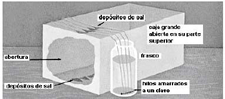

| Objetivo: |
Observar la formación de estalactitas y estalagmitas.
|
| |
| Introducción: |
|
Las estalactitas y estalagmitas son formaciones geológicas de forma cónica, originadas por disolución de materiales calcáreos, contenidas en las aguas de las grutas. Las que se forman en el suelo son denominadas estalagmitas y las del techo son las estalactitas.
Las sustancias contenidas en el agua, que no están disueltas se depositan y las que están disueltas, sólo se depositarán cuando el agua se evapore, o a través de algún proceso químico.
El agua se filtra a través de las rocas calcáreas de las grutas, queda colgada en forma de gota en el techo y algunas caen al suelo. Parte del gas carbónico disuelto se suelta y se mezcla con el aire. De ésta forma, el agua no puede mantener más los compuestos calcáreos en solución. Cuando el agua se evapora de las gotas van apareciendo depósitos en el techo y en el piso, que se acumulan (estalagmitas y estalactitas). Cuando ocurre el encuentro de una estalactita con una estalagmita surge una columna llamada estalagmato. |
|
|
| Desarrollo Experimental: |
|
Experimento 1:
Construir con la caja de zapatos una imitación de gruta (Figura1).
Preparar solución de sulfato de magnesio y agregar una pequeña cantidad de colorante.
Llenar dos frascos con esta solución y colocarlos al lado de la caja.
Amarrar cuatro cordeles uniendo los dos clavos y colocar cada clavo sumergido en los frascos con los cordeles vueltos para arriba y pasando por encima de la caja.
Dejar el sistema en reposo durante una semana y anotar lo que se observe durante este período.
|
| Resultados y Concluciones: |
| 1) Explicar lo que sucedió.
2) ¿Cómo se forman las estalactitas y estalagmitas?
La solución de sulfato de magnesio subirá por los cordeles y la sal se irá acumulando a medida que el agua se evapore. Después de algunos días, en el piso de la caja se formarán pequeños montones de sal. En la parte superior del cordel (techo de la gruta), también se formarán depósitos de sal. |
|
|
Figura 1:
Formación de Estalactitas y Estalagmitas |
|  |
| |
|